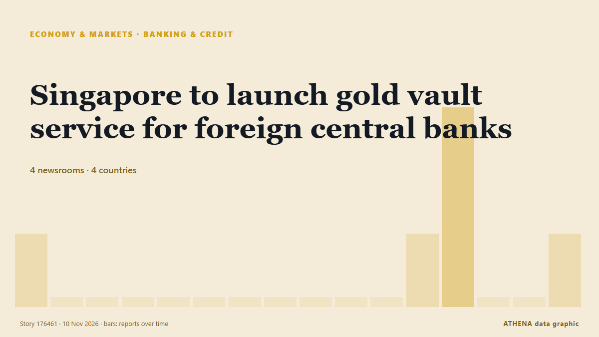

Banques et crédit
SponsoriséPrésenté par  Cybernetics and Artificial Intelligence Lab Welcome to the Cybernetics and Artificial Intelligence Laboratory, established at the Department of Business Administration of the National and Kapodistrian University of Athens. The lab is headed by Professor Dimitrios Thomakos. The lab aims to do research that can be published in top venues. Our research uses tools and methods of Artificial Intelligence, and lies in the following areas: - Forecasting - Decision making - Cyber security - Finance We are always looking forward to collaborating with exceptional students!
Cybernetics and Artificial Intelligence Lab Welcome to the Cybernetics and Artificial Intelligence Laboratory, established at the Department of Business Administration of the National and Kapodistrian University of Athens. The lab is headed by Professor Dimitrios Thomakos. The lab aims to do research that can be published in top venues. Our research uses tools and methods of Artificial Intelligence, and lies in the following areas: - Forecasting - Decision making - Cyber security - Finance We are always looking forward to collaborating with exceptional students!
| 28 oct. | 0 |
|---|---|
| 29 oct. | 0 |
| 30 oct. | 1 |
| 31 oct. | 0 |
| 1 nov. | 0 |
| 2 nov. | 0 |
| 3 nov. | 1 |
| 4 nov. | 1 |
| 5 nov. | 3 |
| 6 nov. | 4 |
| 7 nov. | 6 |
| 8 nov. | 7 |
| 9 nov. | 1 |
| 10 nov. | 0 |
Les titres sont affichés en anglais, tels que publiés.

Singapore to launch gold vault service for foreign central banks
The Monetary Authority of Singapore said on Tuesday it would launch a vaulting service to hold bullion for foreign central banks and lower taxes on some gold-market companies as it competes for a… de MyJoyOnline
Israel issues tender for over 700 settlement units near Bethlehem in occupied West Bank
Palestinian commission says Israeli authorities have issued 28 tenders since start of 2026, including 18 covering 7,815 settlement units across occupied West Bank, including East Jerusalem. de Anadolu Agency (English)
Paraguay Holds Ex-President Peña Before Trial
A judge ordered ex-president Santiago Peña held before trial in the Ueno Bank case as new president Pedro Alliana takes over a shaken Paraguay. de The Rio Times
Paraguay Guaraní Falls as Ueno Bank Fails
Paraguay’s guaraní fell about 12% in eight days after Ueno Bank failed and bond risk rose, but we found no rating cut by Moody’s, S&P or Fitch. de The Rio Times
PM reviews youth business, agriculture loan schemes
Govt allocates Rs292b for youth business, agriculture loans in 2026-27, reserves 30pc of youth loans for women. de Express Tribune
Paraguay’s former president charged after bank collapse
The accounting black hole at Ueno Bank swallows public funds, leaves thousands of citizens without access to their deposits and pushes Paraguay into its worst institutional crisis in years. de Euronews English
Security officer detained after being filmed pointing gun at settlers near West Bank's Jericho
Following the incident, an investigation was opened at the Jordan Valley police station in the Judea and Samaria District on suspicion of unlawful use of a weapon. de The Jerusalem Post
Daycare director, two caregivers indicted over 400 alleged abuse incidents involving 17 infants
According to the indictment, the defendants implemented a series of cruel "punishment methods" at the daycare center. de The Jerusalem Post
World Bank approves $300m to improve learning for 2.6 crore Bangladeshi children
The initiative aims to improve learning outcomes from pre-primary to Grade 5, strengthen teaching and school management, and provide additional support to children falling behind in their studies. de The Business Standard (Bangladesh) (working feed)
Israeli settler attacks on West Bank olive harvest hit record since 2006, UN says
The alleged incident follows an IDF raid on an illegal West Bank outpost on Wednesday. de The Jerusalem Post
Paraguay’s impeached president charged over bank collapse
Asuncion: Paraguayan officials put former President Santiago Peña under house arrest on Friday, shortly after lawmakers impeached him amid a political and financial crisis triggered by the collapse… de Deccan Herald
China's giant pandas make public debut at US zoo
The pair are to be hosted in the southern US facility for the next 10 years. de The Straits Times
Obi to Tinubu: Account for N15.8tn subsidy savings, $100bn loans
Chuks Okocha and Sunday Aborisade in Abuja The presidential candidate of the Nigeria Democratic Congress (NDC), Mr. de ThisDay (Nigeria)
IMF chief says any slowdown in AI-driven growth would be factor for central banks
A steep rout in technology stocks on Nov 5 rippled through the markets after the Democrats’ victory in the US midterm elections. de The Straits Times
IDF admits West Bank commander met settler official, denies secret coordination of Jericho outpost
Sources said the head of the IDF Central Command coordinated with settler leaders and sought to keep senior field commanders in the dark until the families had entered the homes in a move that… de Haaretz (English)
Cyberattack Hits French Blood Bank Site but No Blood Products Are Compromised
A cyberattack on several blood banks tried to raise temperatures to extremely high levels but was thwarted before it could do any damage to blood products or samples, French authorities said. de Korea Herald
FG begins N50,000 monthly cash support for poor Nigerians
It warned Nigerians against fraudsters, advising beneficiaries not to disclose their personal identification numbers or Bank Verification Numbers (BVNs) to anyone. de Channels TV
Ueno Bank: How a Digital Lender Triggered Paraguay’s Financial and Political Crisis
Ueno Bank’s resolution left millions of customers temporarily unable to access their accounts and put the savings of individuals, businesses and public institutions at risk. de Colombia One
Pakistan’s external debt doubles over a decade: World Bank
ISLAMABAD: Pakistan’s external debt stock increased 4 percent to USD 135.1 billion in 2025, with multilateral and bilateral creditors accounting for the bulk of the country’s public and publicly… de Business Recorder